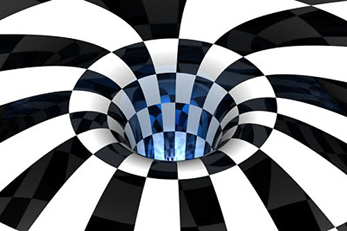
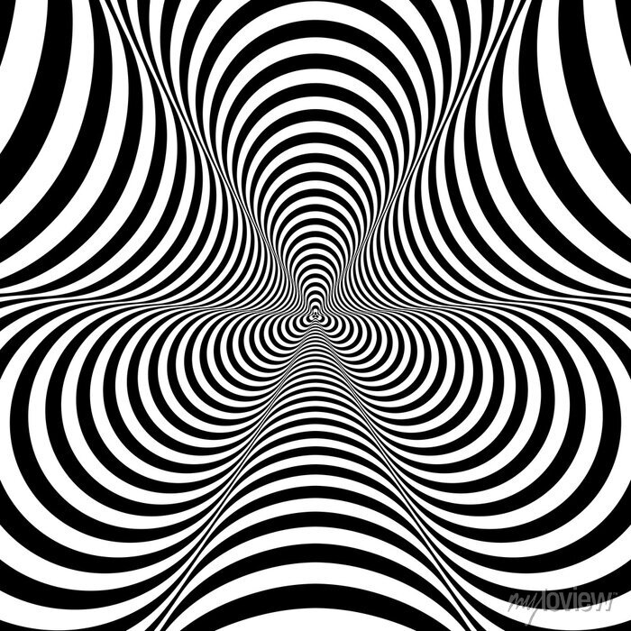
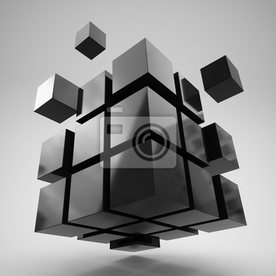
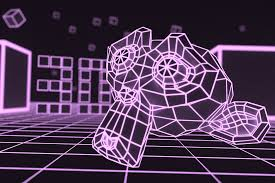
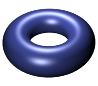

Grafika trójwymiarowa (3D) to technika tworzenia wizualnych przedstawień obiektów i scen, które mają głębię i przestrzenny wygląd, dzięki czemu przypominają rzeczywisty świat. W odróżnieniu od grafiki dwuwymiarowej, gdzie obrazy są płaskie i pozbawione perspektywy, grafika 3D wykorzystuje trzy wymiary – szerokość, wysokość i głębokość – aby stworzyć bardziej realistyczne i dynamiczne wizualizacje. Stosowana jest w wielu dziedzinach, takich jak film, gry komputerowe, architektura, projektowanie przemysłowe, a także w medycynie czy nauce. Dzięki technologii renderowania, obiekty 3D mogą być animowane, obracane, oświetlane i modyfikowane w czasie rzeczywistym, co daje ogromne możliwości twórcze.
    -Modele 3D – Obiekty w grafice 3D są reprezentowane przez modele, które składają się z wierzchołków, krawędzi i powierzchni. Modele mogą być tworzone za pomocą różnych narzędzi do modelowania 3D.
-Teksturowanie – Dodawanie tekstur do modeli 3D pozwala na nadanie im bardziej realistycznego wyglądu, np. skórze, metalu czy drewnie. Tekstury to obrazy nakładane na powierzchnię modelu.
-Oświetlenie – Oświetlenie w grafice 3D jest kluczowe dla uzyskania odpowiednich cieni, odbić i atmosfery. Różne źródła światła (np. punktowe, kierunkowe, otoczenia) wpływają na to, jak obiekty wyglądają.
-Renderowanie – Proces generowania finalnego obrazu lub animacji z modelu 3D. Renderowanie oblicza, jak światło wpływa na obiekty i jak wyglądają one w danej scenie, uwzględniając m.in. cienie, odbicia i materiały.
-Silniki 3D – Programy takie jak Unity czy Unreal Engine, które umożliwiają tworzenie interaktywnych doświadczeń 3D, takich jak gry wideo. Zapewniają one narzędzia do modelowania, animowania i renderowania w czasie rzeczywistym.